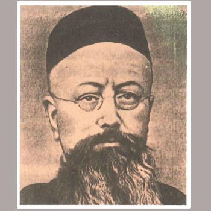

Istočnoazijski mučenici (6 svetaca)
Svećenik
Sv. Modest Andlauer
1847. – 1900.
Isusovački svećenik i misionar služio je u Kini u vrijeme rastućih progona. S Remigijem Isoréom ostao je u misiji i podnio mučeništvo, a obojica pripadaju skupini stotinu dvadeset kineskih mučenika.

Izvor slike
- Spomendan
- 19. lipnja
- Zaštitništvo
- Nije navedeno u izvoru
- Životni vijek
- 1847. – 1900.
- Djelovanje
- Misije i evangelizacija · Progoni i progonstvo · Mučeništvo
- Razdoblje
- 19. stoljeće
- Datum rođenja
- 22.05.1847.
- Mjesto rođenja
- Rosheim, Alsace, Francuska
- Datum smrti
- 19.06.1900.
- Mjesto smrti/mučeništva
- Wuyi, Hebei, Kina
- Okolnosti smrti/mučeništva
- Ubijen kopljima u kapeli za Bokserskog ustanka; nakon smrti obezglavljen.
- Uloga
- Svećenik
- Mučenik
- Da
- Ostale oznake
- Misionar u Kini; mučenik Bokserskoga ustanka
- Pripadnost
- Isusovac
- Drugi oblici imena
- Modeste Andlauer · Modeste · Modestus Andlauer
Ovaj profil upućuje na zajednički izvor „Sveti Remigije Isoré i Modeste Andlauer”. Slijedi životopis skupine ili zajednički prikaz mučeništva; zajednički podaci nisu svi osobni podaci ove osobe.
Zajednički životopis
Sveti Remigije (francuski Rémy, Rémi, latinski Remigius) Isoré, francuski isusovac, misionar i mučenik, rođen je 22. siječnja 1852. u Bambecqueu (departman Nord, sjeverna Francuska), u pobožnoj obitelji. Njegov otac bio je učitelj, jedan brat postao je svećenik, a jedna sestra pridružila se sestrama milosrdnicama svetog Vinka Paulskog. Rémy je već u djetinjstvu osjetio želju za svećeničkim pozivom. Stupio je 1865. u školu Svetog Franje Asiškog u Hazebroucku (departman Nord), a 1871. u sjemenište u Cambraiu. Od 1873. predavao je u osnovnoj školi u Roubaixu, a 1875. stupio u isusovački novicijat u Saint-Acheulu. Osjetio je želju za misionarskim djelovanjem pa je 1881. poslan u Kinu. Stigao je 1882. u provinciju Hebei (istočna Kina) i zatim godinu dana učio kineski jezik. Zaređen je za svećenika 30. srpnja 1886. Od 1888. do 1897. djelovao je u misiji Tchang-Kia-Tchouang (provincija Shandong, istočna Kina). Premješten je 16. lipnja 1900. u biskupiju Sienhsien (okrug Xianxian, provincija Hebei).
Bilo je to vrijeme Bokserskog ustanka (1899-1901), usmjerenog protiv tuđinaca. Na putu prema sjedištu svoje misije svratio je u okrug Wuyi kako bi se u tamošnjoj misiji sastao sa svojim redovničkim subratom, ocem Modesteom Andlauerom (Rosheim, Alsace, 22. V. 1847-1900), francuskim isusovcem i misionarem. Tamo su isusovci postali žrtve mržnje pa su svoj život i misionarsko djelovanje završili kao mučenici. Ustanici su dvojicu svećenika napali dok su molili pred oltarem u kapeli. Okupili su sve kršćane u selu i predložili im dvije mogućnosti: „Ako odete desno, znači da ste kršćani. Ako odete lijevo, bit ćete spašeni“. Tridesetak osoba opredijelilo se za prvu mogućnost i svi su ubijeni, a među njima i dva misionara. Pogubljeni su na današnji dan, 19. lipnja 1900, u okrugu Wuyi (provincija Hebei, istočna Kina). Glave misionara zločinci su objesili na ulazu u selo, kao opomenu drugim katolicima. Papa Pio XII. proglasio ih je blaženima 17. travnja 1955, a papa Ivan Pavao II. svetima 1. listopada 2000, zajedno s još 118 kineskih mučenika.
Pročitaj više na izvornoj stranici ↗